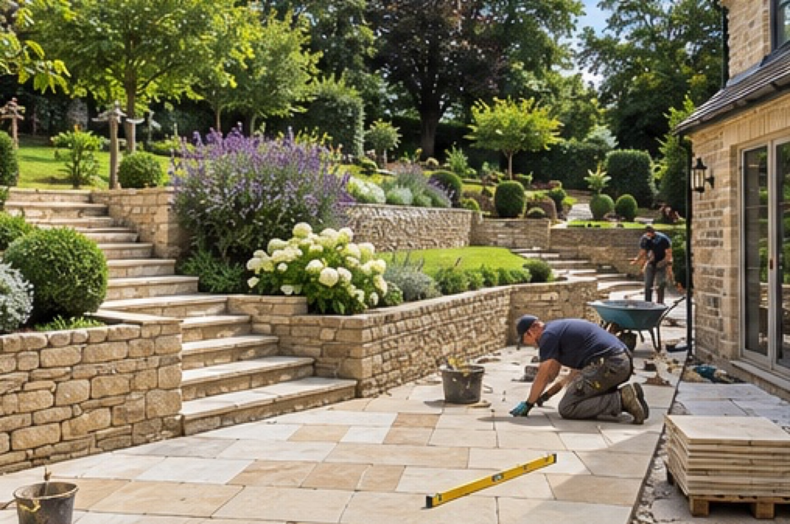

Project scope
Build better outdoor spaces
From a level dining terrace to a quieter seating area, a garden scheme works best when access, water and maintenance are considered together.
- Patios, paths and seating areas
- Changes in level, edging and drainage
- Planting beds, screening and lighting provision
Can the work be phased?
Discuss underground routes, drainage and levels at the outset so later planting or lighting can follow the hard landscaping.